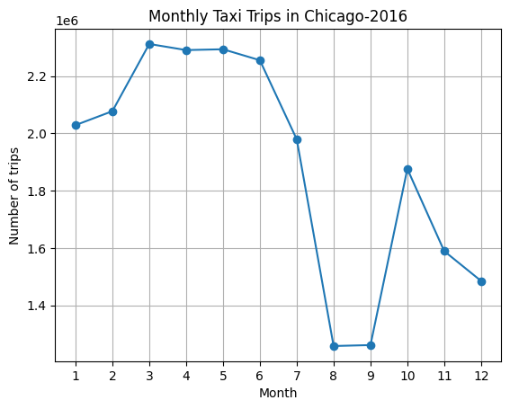
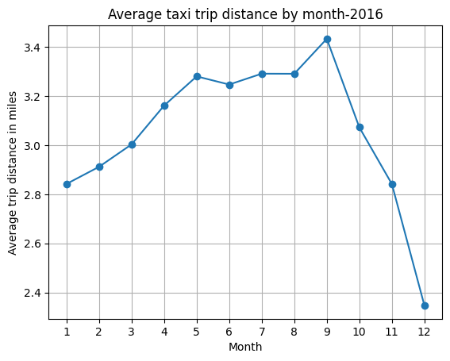
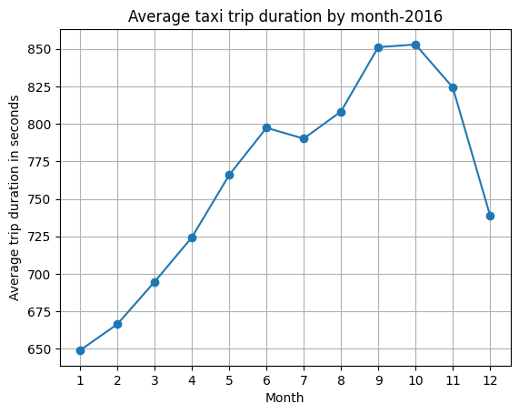
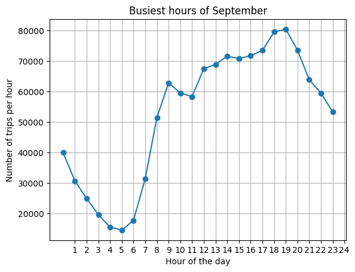

COMPLETED · DATA ANALYTICS
Chicago Taxi Trip Analysis
An exploratory analysis of Chicago taxi activity in 2016 using SQL, BigQuery, Python and Power BI to examine monthly trip volumes, distance, duration and hourly demand patterns.

Project objective
Build practical SQL and data-visualisation skills using the BigQuery public Chicago Taxi Trips dataset, then communicate the results through a compact Power BI dashboard.
Questions explored
- How did taxi trip volumes change across 2016?
- How did average trip distance vary by month?
- How did average trip duration vary by month?
- What were the busiest hours in September 2016?
Approach
I queried the public dataset in BigQuery, grouped and aggregated trip records by month and hour, inspected the outputs in Python, and created visualisations before assembling the key results into a Power BI dashboard.
Key observations
- Monthly trip activity was strongest in spring before dropping sharply in August and September.
- Average trip distance increased through much of the year, peaking in September before declining.
- Average trip duration also rose through most of 2016, reaching its highest levels around September and October.
- September taxi demand was lowest in the early morning and strongest in the evening, with the highest activity around 6–7 PM.
Power BI dashboard
The dashboard brings the four analysis questions together in one view so the monthly and hourly patterns can be compared quickly.
Notebook visualisations
Selected plots from the analysis notebook are shown below.



